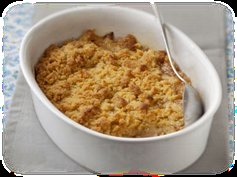

Crumble aux fruits
Ingredients
4×
- 3 poires
- 1 banane
- 100 g de chocolat blanc
- 60 g de farine
- 50 g de poudre d'amande
- 60 g de cassonade
- 60 g de beurre

Préparation
Étape 1
Éplucher et couper en petits morceaux les fruits (3 poires, 1 banane), puis les répartir dans le plat. Parsemer de 100 g de chocolat blanc en morceaux.
Étape 2
Mélanger 60 g de farine, 50 g de poudre d'amande et 60 g de cassonade. Ajouter 60 g de beurre en gros morceaux et l’écraser du bout des doigts jusqu’à obtenir un mélange sablé.
Étape 3
Répartir sur les fruits et cuire 30min à 210ºC.
Conseils
- La poudre d’amande peut être remplacée par 40g de farine en plus (100g de farine au total).
- Les poires peuvent venir d’une grosse boîte au sirop.
- Pommes (3) avec poudre d’amande et 5 speculoos mixés dans la pâte.
- Poires (4-5), poudre de noisette au lieu d’amande, 1 sachet de sucre vanillé et 2 pincées de cannelle.